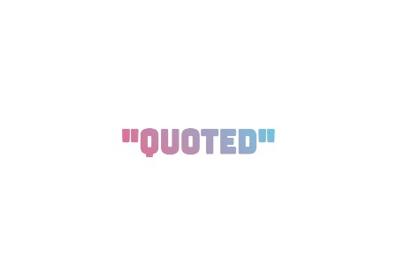
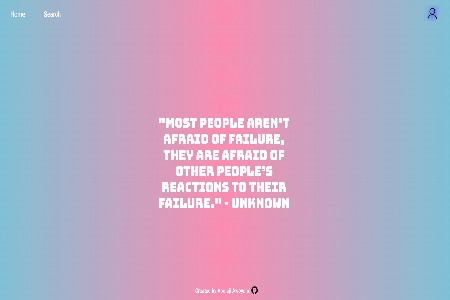
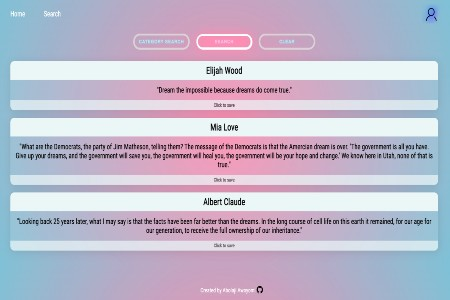
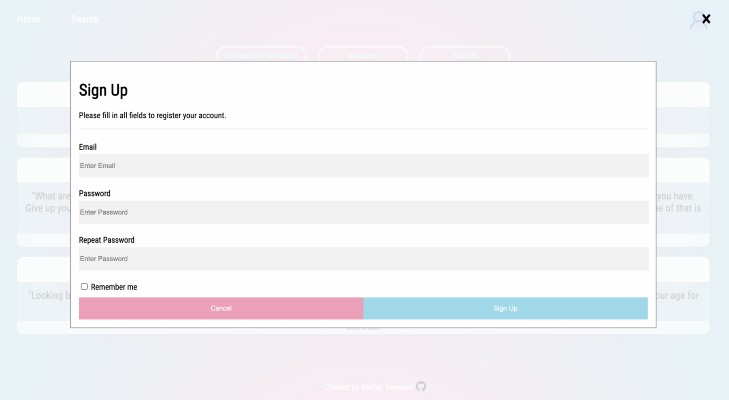
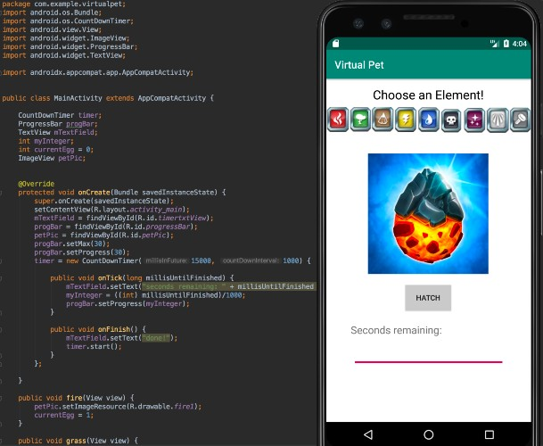
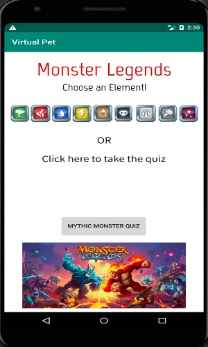
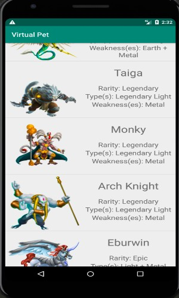
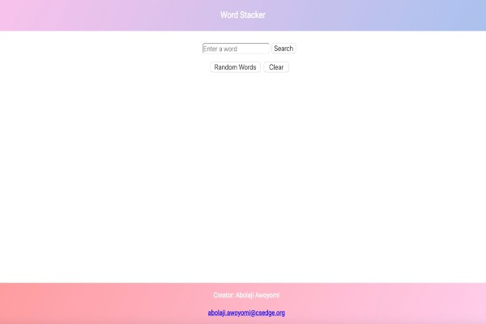
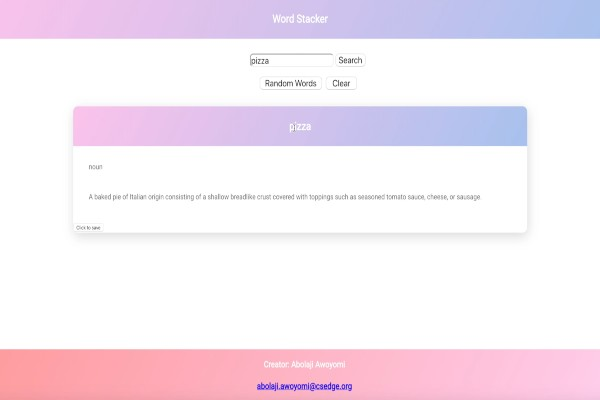
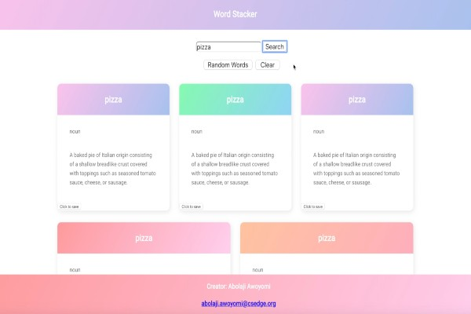

I made this to keep all the quotes that I have in my phone and to find new quotes.




Game Review
Made with Typescript, this webapp is a space for gamers to browse and review different games. I connected this to Firebase Database in order to save user data.
Monster Legends App
Monster Legends is one of my favorite mobile games. You can collect, breed, train and
fight with a wide variety of monsters. In Android Studio, I used Java to sort those monsters by element
and provide basic information about them. To add a fun aspect, I included a quiz to test the user on
their knowledge of the game.



Word Stacker
Word Stacker is an interactive dictionary/thesaurus. You can search words to see
definition, part of speech, related words, etc or you can choose to see random words. You can save some
of the words you come across to your profile and study them later. I came us with this idea as a
supplement to my vocabulary. I am not the strongest writer and I find myself sometimes either not
knowing what word to use or using words that I do not completely understand. The programs we use in
school are forced on us and feel like busy work. However, with Word Stacker, you can take control over
your own education and vocabulary. I created this web app using HTML, CSS, and Javascript.



Histourism
Histourism is a website that strategically combines history and tourism. Various
people in many different communities, especially as tourists, are uninformed about the culture and
history behind the places they are going to visit. Our website is able to give the user information
based on their desired travel location such as historical context, flight plans and more. My group and I
used HTML, CSS, and Javascript in addition to the Google Maps API and the Skyscanner Flight Search API.